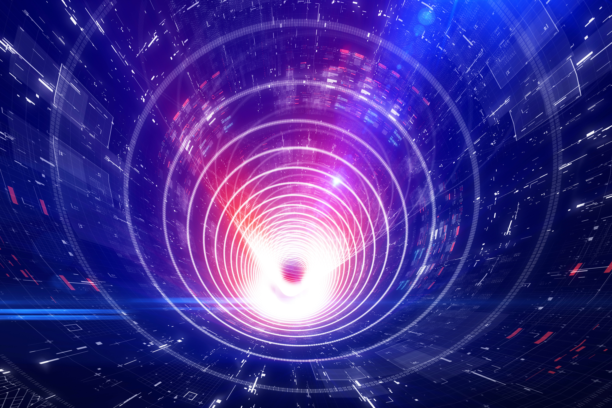

UltraEdge Hyper-V - Installation Overview
This page provides a visual overview of the UltraEdge simulator installation process using Microsoft Hyper-V.
High-Level Installation Process
The following diagram shows the main phases of the installation. Click on any phase to jump to detailed steps.
%%{init: {'theme':'base', 'themeVariables': { 'primaryColor':'#ECF0F1','primaryTextColor':'#2C3E50','primaryBorderColor':'#34495E','lineColor':'#3498DB','secondaryColor':'#E8F6F3','tertiaryColor':'#FEF9E7'}}}%%
flowchart LR
Start([Start]) --> Phase1[Prerequisites]
Phase1 --> Phase2[Network Setup]
Phase2 --> Phase3[VM Creation]
Phase3 --> Phase4[Security Configuration]
Phase4 --> Phase5[OS Installation]
Phase5 --> Done([Complete])
click Phase1 "#prerequisites-detail" "View Prerequisites Details"
click Phase2 "#network-setup-detail" "View Network Setup Details"
click Phase3 "#vm-creation-detail" "View VM Creation Details"
click Phase4 "#security-configuration-detail" "View Security Configuration Details"
click Phase5 "#os-installation-detail" "View OS Installation Details"
style Start fill:#3498DB,stroke:#2C3E50,stroke-width:2px,color:#fff
style Done fill:#27AE60,stroke:#1E8449,stroke-width:2px,color:#fff
style Phase1 fill:#E74C3C,stroke:#C0392B,stroke-width:2px,color:#fff
style Phase2 fill:#F39C12,stroke:#D68910,stroke-width:2px,color:#fff
style Phase3 fill:#9B59B6,stroke:#7D3C98,stroke-width:2px,color:#fff
style Phase4 fill:#E67E22,stroke:#CA6F1E,stroke-width:2px,color:#fff
style Phase5 fill:#16A085,stroke:#138D75,stroke-width:2px,color:#fff
TIP: Click on any phase in the diagram above to jump to detailed steps for that phase.
Prerequisites Detail
This phase ensures your system has everything needed to begin the installation.
%%{init: {'theme':'base', 'themeVariables': { 'primaryColor':'#ECF0F1','primaryTextColor':'#2C3E50','primaryBorderColor':'#34495E','lineColor':'#E74C3C','secondaryColor':'#FADBD8','tertiaryColor':'#FEF9E7'}}}%%
flowchart TD
Start([Start Prerequisites]) --> Download[Download UltraEdge ISO
from eKnowledge]
Download --> CheckHyperV{Hyper-V
Enabled?}
CheckHyperV -->|No| EnableHyperV[Enable Hyper-V Feature]
CheckHyperV -->|Yes| CheckNested
EnableHyperV --> Reboot[Reboot System]
Reboot --> CheckNested{Nested
VM?}
CheckNested -->|Yes| ExposeVirt[Enable Virtualization Extensions]
CheckNested -->|No| Done
ExposeVirt --> Done([Prerequisites Complete])
style Start fill:#E74C3C,stroke:#C0392B,stroke-width:2px,color:#fff
style Done fill:#27AE60,stroke:#1E8449,stroke-width:2px,color:#fff
style CheckHyperV fill:#F39C12,stroke:#D68910,stroke-width:2px
style CheckNested fill:#F39C12,stroke:#D68910,stroke-width:2px
Key Steps:
- Download the UltraEdge ISO file from eKnowledge (approximately 2GB uncompressed)
- Enable Hyper-V feature in Windows if not already enabled
- Reboot system after enabling Hyper-V
- If using nested VMs, enable virtualization extensions on the host VM
Network Setup Detail
This phase configures the virtual network for the UltraEdge VM.
%%{init: {'theme':'base', 'themeVariables': { 'primaryColor':'#ECF0F1','primaryTextColor':'#2C3E50','primaryBorderColor':'#34495E','lineColor':'#F39C12','secondaryColor':'#FEF5E7','tertiaryColor':'#FEF9E7'}}}%%
flowchart TD
Start([Start Network Setup]) --> CreateSwitch[Create Internal Virtual Switch]
CreateSwitch --> NameSwitch[Name the Switch
e.g., UltraEdge]
NameSwitch --> OpenNetwork[Open Network and Sharing Center]
OpenNetwork --> Properties[Open Adapter Properties]
Properties --> ConfigIP[Configure IPv4 Settings]
ConfigIP --> SetIP[Set IP: 10.100.100.126
Subnet: 255.255.255.0]
SetIP --> Done([Network Setup Complete])
style Start fill:#F39C12,stroke:#D68910,stroke-width:2px,color:#fff
style Done fill:#27AE60,stroke:#1E8449,stroke-width:2px,color:#fff
Key Steps:
- Create a new Internal Virtual Switch in Hyper-V Manager
- Name it appropriately (e.g., "UltraEdge")
- Configure the network adapter with static IP: 10.100.100.126/24
VM Creation Detail
This phase creates and configures the virtual machine using the Hyper-V wizard.
%%{init: {'theme':'base', 'themeVariables': { 'primaryColor':'#ECF0F1','primaryTextColor':'#2C3E50','primaryBorderColor':'#34495E','lineColor':'#9B59B6','secondaryColor':'#F4ECF7','tertiaryColor':'#FEF9E7'}}}%%
flowchart TD
Start([Start VM Creation]) --> NewVM[Create New Virtual Machine]
NewVM --> VMName[Specify VM Name]
VMName --> Gen2[Select Generation 2
UEFI Required]
Gen2 --> Memory[Assign Memory
Minimum 4096MB]
Memory --> Network[Connect to Virtual Switch]
Network --> VHD[Create Virtual Hard Disk
Size: 20GB]
VHD --> ISO[Mount UltraEdge ISO File]
ISO --> Done([VM Creation Complete])
style Start fill:#9B59B6,stroke:#7D3C98,stroke-width:2px,color:#fff
style Done fill:#27AE60,stroke:#1E8449,stroke-width:2px,color:#fff
style Gen2 fill:#E74C3C,stroke:#C0392B,stroke-width:2px,color:#fff
Key Steps:
- Launch the New Virtual Machine wizard in Hyper-V Manager
- Name your virtual machine
- Important: Select Generation 2 (required for UEFI boot)
- Allocate at least 4096MB of memory
- Connect to the previously created virtual switch
- Create a 20GB virtual hard disk
- Attach the UltraEdge ISO file
Security Configuration Detail
This phase configures essential security settings before the first boot.
%%{init: {'theme':'base', 'themeVariables': { 'primaryColor':'#ECF0F1','primaryTextColor':'#2C3E50','primaryBorderColor':'#34495E','lineColor':'#E67E22','secondaryColor':'#FEF5E7','tertiaryColor':'#FEF9E7'}}}%%
flowchart TD
Start([Start Security Configuration]) --> Settings[Open VM Settings]
Settings --> Security[Navigate to Security Section]
Security --> SecureBoot[Enable Secure Boot]
SecureBoot --> Template[Set Template to
Microsoft UEFI Certificate Authority]
Template --> TPM[Enable Trusted Platform Module]
TPM --> Done([Security Configuration Complete])
style Start fill:#E67E22,stroke:#CA6F1E,stroke-width:2px,color:#fff
style Done fill:#27AE60,stroke:#1E8449,stroke-width:2px,color:#fff
style Template fill:#E74C3C,stroke:#C0392B,stroke-width:2px,color:#fff
Key Steps:
- Open the VM settings
- Navigate to Security under Hardware
- Ensure Secure Boot is enabled
- Critical: Change template from "Microsoft Windows" to "Microsoft UEFI Certificate Authority" for Linux
- Enable Trusted Platform Module (TPM) for secure connections
OS Installation Detail
This phase installs and configures the UltraEdge Linux operating system.
%%{init: {'theme':'base', 'themeVariables': { 'primaryColor':'#ECF0F1','primaryTextColor':'#2C3E50','primaryBorderColor':'#34495E','lineColor':'#16A085','secondaryColor':'#E8F8F5','tertiaryColor':'#FEF9E7'}}}%%
flowchart TD
Start([Start OS Installation]) --> FirstBoot[Start Virtual Machine]
FirstBoot --> SelectInstall[Select Install Option
Development with Network Config]
SelectInstall --> NetConfig[Configure Network]
NetConfig --> SetIP[Set IP: 10.100.100.1
Subnet: 10.100.100.0/24]
SetIP --> Continue[Continue Installation]
Continue --> Complete[Installation Completes]
Complete --> Eject[Eject ISO File]
Eject --> Reboot[Reboot VM]
Reboot --> Done([OS Installation Complete])
style Start fill:#16A085,stroke:#138D75,stroke-width:2px,color:#fff
style Done fill:#27AE60,stroke:#1E8449,stroke-width:2px,color:#fff
Key Steps:
- Start the virtual machine for the first time
- Select "Install UltraEdge Instrument: Development with Network Config"
- Configure network interface (eth0) with manual IPv4 settings
- Set IP address to 10.100.100.1 with subnet 10.100.100.0/24
- Complete the installation process
- Eject the ISO file before reboot
- Reboot into the installed system
Next Steps
Ready to begin? Follow the detailed step-by-step guides:
- Overview - Introduction to Hyper-V for UltraEdge
- Hyper-V Activation - Enable Hyper-V feature on Windows
- Nested VMs - Enable virtualization for VMs inside VMs
- Installation Guide - Complete installation instructions
This documentation is part of the Teradyne Archimedes Reference Architecture series.